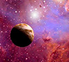

↗The search for worlds beyond our own
How astronomers look for distant planets and the clues that help us understand them.
THE NEXT FRONTIER STARTS HERE
Discover the people, machines and bold ideas taking humanity farther into space.
WHY WE LOOK UP
Space technology helps us understand our home planet, connect across continents and imagine what might be possible beyond the stars. This is a place to explore that journey.
Discover our story